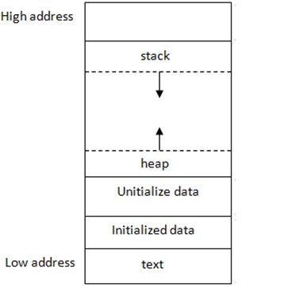
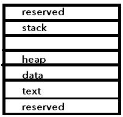

Recap - addressing modes
- Base addressing
- Example:
lhu $s0, 4($s5) # addr = s5 + 4 - Limit for offset is approx between -32k and 32k
- Example:
- PC-relative addressing
- Example:
beq $t0, $t1, L1 # addr = PC + 4 * L1b/c each address adds 4 bytes- Note that this "L1" term being multiplied by 4 is really the offset
- PC has the next instruction's address
- Example:
- Pseudo-direct addressing
- Example:
j label1 # addr = 4 bits from PC + 4 * label1- Note that here, the "label1" term is not an offset but rather the actual address being jumped to (with 4 bits taken off the left and 2 off the right of course)
- If you start at a multiple of 4, then all instructions are of the form ...00 because the 2's and 1's digits will be 0
- Limitation: Can only jump to instructions sharing the first 4 bits of the program counter
- Example:
- Register addressing
- Example:
jr $r # addr = ra
- Example:
Program in Memory (RAM)
The following are synonyms:
- program in memory
- process
- running program

The diagram above is the entire memory allocated to the process by the operating system. How the OS allocates this virtual memory is a topic outside the scope of this course, but basically we can think of the memory as starting at 0 and going up to some large number, and not worry about other processes' concurrent memory usage.
Parts of memory:
- Stack: local variables, saved registers, return addresses, function parameters
- Heap: dynamic memory allocations.
new,malloc, etc. affect the heap - Data: global and static data
- Text: program code
Notes:
- The first step of the process of running is to put the program code in the text section
- The stack "hangs upside down" on top of the heap
- The heap can also grow - it grows up while the stack grows down
- The stack is used for function purposes - calling a function creates a stack frame for the function
- The stack and heap grow towards each other. If they collide, the program runs out of memory
- On modern computers, this doesn't typically happen because the size of the rectangle between the stack and heap is huge

Examples
// global var, so goes in the data section
double glob = 3.14
int main() {
// local var of function main, so goes in stack
int num = 0;
// this instr goes in text section, along with rest of program code
cout << num;
// dynamic memory allocation
// BUT ptr is a var so ptr goes on the stack
// while the char array goes on the heap
char* ptr = new char[10];
// nums is a ptr to object or something
vector<int> nums{1, 2, 3, 4};
}
Note: immediate values hardcoded like num = 0 are stored in program code (text section)
Rule: "stack is fast, heap is slow":
- Allocating memory on the stack is fast, allocating memory on the heap is slow
- This is because next memory location on stack will always be on "top" of the stack (bottom if you look at the memory) - while for heap, may need to search through heap to find empty space to use
- Heap may have holes of varying sizes as well due to memory that was freed up in between chunks of memory that are still being used - "memory fragmentation"
- The stack pointer register ($sp) holds the address for the top of the stack, so it is easy to know where the top of the stack is at all times
- In our case, to expand the stack size by 4 bytes (e.g. to store an int on the stack) we would do
sp -= 4(or in MIPS, we would doaddi $sp, $sp, -4)
- In our case, to expand the stack size by 4 bytes (e.g. to store an int on the stack) we would do